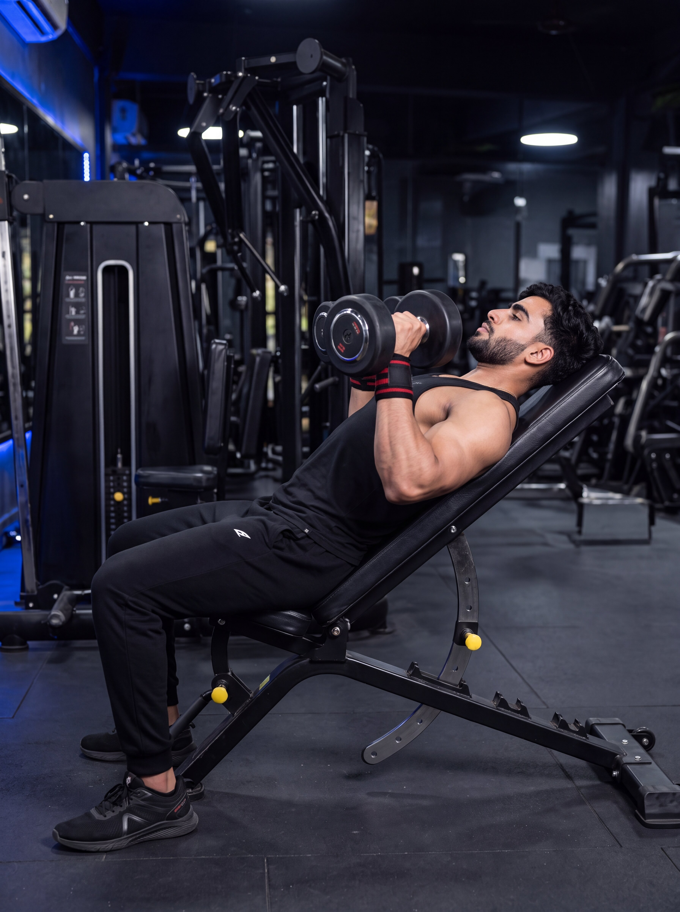

Primary Muscle
Upper Chest
Build Upper-Chest Strength, Improve Independent Arm Control & Develop Balanced Pressing Power
The Incline Dumbbell Press is a powerful compound exercise that emphasizes the upper chest while also engaging the shoulders and triceps. By allowing each arm to work independently, it helps develop balanced pressing strength, improve movement control, and support complete upper-body development.

Upper Chest
Dumbbells & Incline Bench
Intermediate
Compound
Understand which muscles do most of the work during the Incline Dumbbell Press and which supporting muscles help stabilize, control, and complete each repetition.
Upper Chest
Front Shoulder
Upper Arm
Shoulder-Girdle Stabilizer
Discover how the Incline Dumbbell Press helps develop upper-chest strength, support muscle growth, improve independent arm control, and build balanced pressing power.
Emphasizes the clavicular head of the pectoralis major, helping develop greater strength through an angled dumbbell pressing movement.
Places meaningful tension on the upper chest through a controlled range of motion, making it valuable for building muscle size and more complete chest development.
Each arm controls its own dumbbell, helping reveal side-to-side strength differences and encouraging more balanced pressing development.
Unlike a fixed barbell grip, dumbbells allow each arm to follow a more natural pressing path based on your individual anatomy, mobility, and comfort.
Controlling two independent dumbbells requires coordination and stabilization throughout each repetition, helping develop more consistent pressing control.
Develops the upper chest while also training the anterior deltoids and triceps, supporting stronger performance across a variety of upper-body pushing exercises.
Follow these step-by-step instructions to perform the Incline Dumbbell Press with better control, proper technique, and effective upper-chest engagement.
Set the incline bench to approximately 30 degrees. Sit on the bench with one dumbbell resting securely on each thigh and keep both feet firmly planted on the floor.
Avoid setting the bench too steep, as a higher angle can shift more of the workload toward the front shoulders.
Use your thighs to help guide the dumbbells upward as you carefully lean back against the incline bench. Position the dumbbells above your upper chest with your arms extended, wrists neutral, and upper back stable against the bench.
Establish a stable upper-back position before beginning your first repetition, and keep both dumbbells balanced and under control.
Lower both dumbbells smoothly toward the sides of your upper chest while keeping your wrists stacked over your forearms. Allow your elbows to follow a natural angle from your torso and maintain stable shoulder positioning.
Do not drop the dumbbells quickly or force an excessively deep range of motion. Lower only as far as you can maintain comfort, control, and stable shoulder positioning.
Press both dumbbells upward with control until your arms are extended above the upper chest. Keep your wrists stable, maintain your upper-back position, and press both sides with balanced effort.
Press both dumbbells evenly and keep them under control at the top instead of forcefully crashing them together.
Continue performing smooth, controlled repetitions while maintaining the same dumbbell path, wrist alignment, elbow position, breathing pattern, and full-body stability. End the set before your technique begins to break down.
Prioritize balanced, high-quality repetitions with both arms before increasing the weight. Progress gradually while keeping your technique consistent.
Avoid these common technique errors to improve upper-chest engagement, maintain better dumbbell control, and perform the Incline Dumbbell Press more effectively.
Using an excessively high incline can shift more of the workload toward the front shoulders and reduce the emphasis placed on the upper chest.
Start with a moderate incline of approximately 30 degrees and maintain a stable pressing position throughout the set.
Allowing the elbows to flare too far outward can make the pressing position less efficient and may place unnecessary stress on the shoulders.
Keep your elbows at a natural angle from your torso and maintain each wrist stacked over its corresponding forearm throughout the movement.
Dropping the dumbbells too quickly or forcing them excessively deep can reduce movement control, disrupt shoulder stability, and make it harder to maintain a consistent pressing path.
Lower both dumbbells smoothly toward the sides of your upper chest and use a comfortable range of motion that allows stable shoulders, neutral wrists, and complete control.
Choosing dumbbells that are too heavy can lead to unstable repetitions, uneven pressing, shortened range of motion, poor wrist alignment, and breakdown of proper technique.
Use a manageable weight that allows both arms to move with balanced control while maintaining consistent technique and an appropriate range of motion throughout the set.
Apply these practical coaching cues to improve your Incline Dumbbell Press technique, maintain balanced control, and build upper-chest strength with more consistent repetitions.
A moderate incline can help emphasize the upper chest while limiting unnecessary dominance from the front shoulders.
Start around 15–30 degrees and adjust based on your equipment, comfort, and ability to maintain proper pressing mechanics.
Keep your upper back firmly supported by the incline bench and maintain controlled shoulder positioning throughout every repetition.
Keep your shoulder blades controlled against the bench and avoid allowing your shoulders to roll forward as you press the dumbbells upward.
Each arm works independently during the Incline Dumbbell Press, making balanced movement and consistent control important throughout every repetition.
Lower and press both dumbbells with consistent timing while keeping your wrists stable and avoiding sudden changes in the movement path.
Progressive overload is valuable, but heavier dumbbells should not come at the expense of balanced control, appropriate range of motion, or consistent pressing mechanics.
Increase the dumbbell weight gradually only when you can complete your target repetitions with reliable technique and equal control on both sides.
Progress from learning the basic dumbbell setup to building greater upper-chest strength with a structured approach that prioritizes balanced control, consistent technique, and gradual overload.
Learn to set the bench at an appropriate incline, position the dumbbells securely, plant your feet firmly, and create a stable upper-back base before using challenging resistance.
Bench angle, safe dumbbell setup, foot stability, shoulder control, neutral wrists, and a repeatable starting position.
Use manageable dumbbells and focus on lowering and pressing both sides with consistent timing, stable wrists, and controlled movement paths throughout every repetition.
Controlled tempo, balanced arm movement, stable dumbbell paths, appropriate range of motion, and consistent body positioning.
Gradually increase dumbbell resistance while preserving the same reliable setup, controlled descent, stable upper back, neutral wrist position, and balanced pressing mechanics developed during the earlier stages.
Quality repetitions, equal control on both sides, gradual load increases, consistent technique, and appropriate recovery.
Continue progressing through planned increases in dumbbell resistance, repetitions, or training volume while maintaining balanced execution and avoiding unnecessary technique breakdown.
Sustainable progression, measurable performance, balanced pressing mechanics, consistent execution, and long-term upper-chest strength development.
Find clear answers to common questions about Incline Dumbbell Press technique, bench angle, muscles worked, range of motion, exercise selection, and training volume.
The Incline Dumbbell Press primarily emphasizes the clavicular head of the pectoralis major, commonly referred to as the upper chest. The anterior deltoids and triceps brachii also contribute to the pressing movement, while additional stabilizing muscles help control each dumbbell independently.
A moderate incline is generally a practical choice. Around 30 degrees is commonly used to emphasize the upper chest while limiting excessive involvement from the front shoulders. The ideal setting can vary slightly depending on the bench design, individual anatomy, mobility, and comfort.
Lower the dumbbells through a comfortable range of motion while maintaining stable shoulder positioning, neutral wrists, and full control. Avoid forcing the dumbbells excessively deep if doing so causes your shoulders to lose stability or creates discomfort.
Neither exercise is universally better. The Incline Dumbbell Press allows each arm to work independently and provides greater freedom of movement, while the Incline Barbell Bench Press generally allows heavier total loads and a more standardized pressing path. Both can be valuable depending on your goals, preferences, and training program.
Yes. Beginners can perform the Incline Dumbbell Press when they start with manageable resistance and first learn proper bench setup, dumbbell positioning, wrist alignment, elbow position, and balanced movement control. The weight should also be light enough to manage safely during both the setup and completion of the set.
The appropriate number of sets and repetitions depends on your training experience, goals, recovery, and overall program. For general muscle development, a common starting point is 3–4 working sets of approximately 6–12 controlled repetitions using a load that allows consistent technique and balanced control on both sides.
Explore other chest exercises that complement the Incline Dumbbell Press and help you build strength across different pressing angles and movement patterns.
Continue building your chest training knowledge with step-by-step exercise guides covering proper technique, muscles worked, common mistakes, coaching tips, and progression strategies.